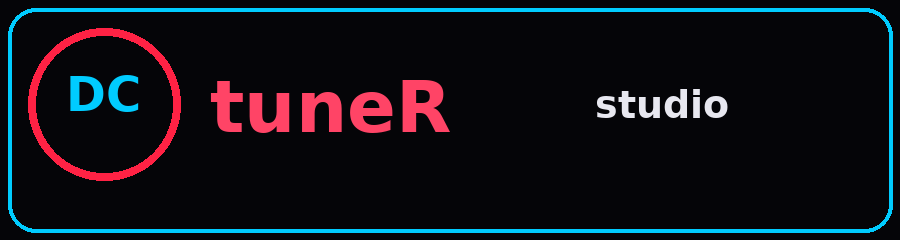
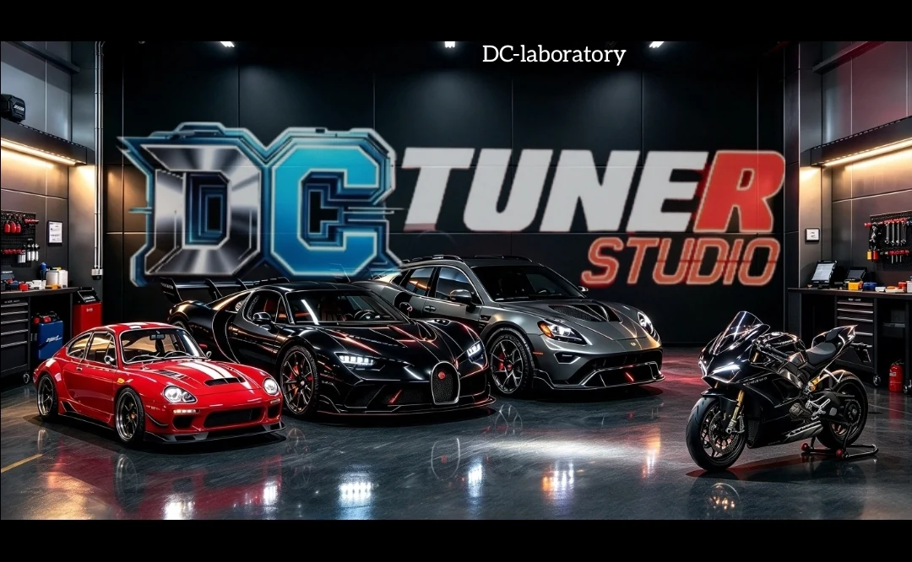
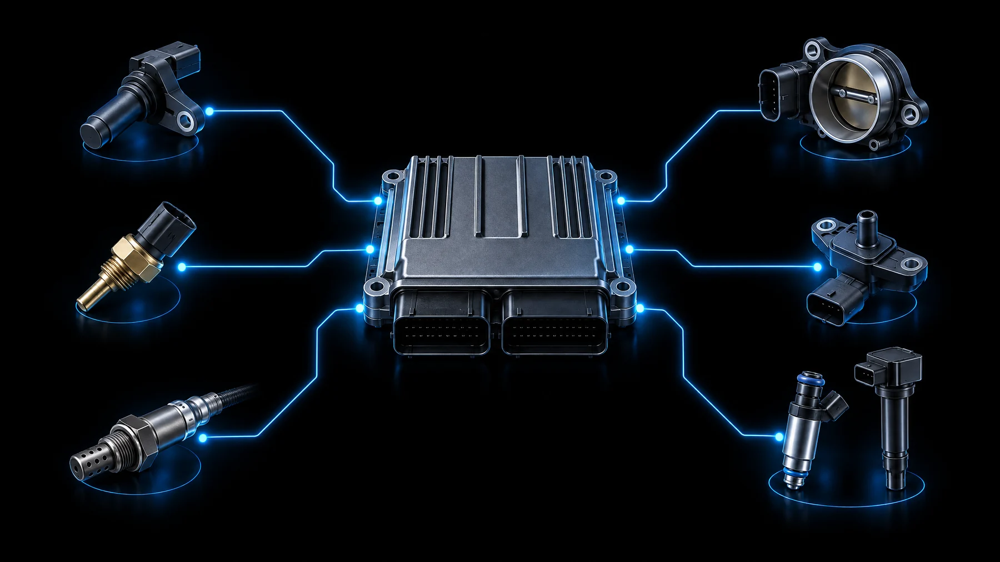

Datos con contexto
Reúne variables disponibles en el perfil configurado, como RPM, MAP, temperatura, TPS, AFR, avance o voltaje.

DC LABORATORY DCTUNERSTUDIO #0
DCtuneRstudio es un panel web local para observar y registrar telemetría que llega desde la ECU por un bridge. Aquí explicamos compatibilidad, sensores y límites actuales.
IMAGEN PRINCIPAL DEL PROYECTO

El fondo OLED negro y el elefante de circuitos azules son una ilustración de marca; no representan una ECU, un pinout ni una conexión física específica.
QUÉ ES DCtuneRstudio
La interfaz se abre en un navegador, pero no es un servicio en la nube: el bridge local recibe datos por puerto serie y se los entrega al panel. La ECU sigue leyendo sus propios sensores; el navegador no se conecta directamente a ellos.
Reúne variables disponibles en el perfil configurado, como RPM, MAP, temperatura, TPS, AFR, avance o voltaje.
Registra telemetría y permite exportar datos CSV para comparar sesiones fuera del vehículo.
La versión actual no escribe mapas ni flashea la ECU. El enfoque confirmado es lectura, visualización y registro.
ECU / FIRMWARE / PROTOCOLO
Speeduino y MegaSquirt son familias de gestión de motor, no conectores universales. La placa, el firmware, el arnés, el acondicionamiento de señal y el archivo de definición determinan qué puede leerse.
Speeduino es una plataforma abierta de gestión de motor basada en hardware y firmware propios. En el bridge actual hay una ruta serie primaria que interpreta telemetría en vivo.
La familia MegaSquirt tiene variantes de hardware y firmware. El perfil del MVP recibe datos serie normalizados en CSV o pares KEY=VALUE; no se anuncia un decodificador binario universal para MS1, MS2 y MS3.
Compatibilidad honesta: la página anterior mencionaba ELM327, Java y escritura de mapas como si fueran funciones confirmadas. Esta versión no promete una ruta ELM327 de extremo a extremo ni flasheo; consulta el código y los paquetes publicados antes de instalar.
DEL MOTOR AL PANEL
Los sensores entregan señales a la ECU. La interfaz puede mostrar los valores que el bridge y el perfil de esa ECU sepan interpretar; no todos aparecen en todos los vehículos.
La ilustración es conceptual: no indica pines, colores de cables, voltajes ni un esquema de instalación.

CONEXIÓN / FLUJO DE DATOS
Este es el recorrido general. Es una explicación de flujo de telemetría, no un diagrama de pines ni una instrucción para cablear una ECU.
Envían señales al sistema de control del motor.
Interpreta entradas y entrega telemetría según hardware y firmware.
DCtuneRstudio usa Python y pySerial para recibir datos por puerto compatible.
El navegador local muestra valores y gráficas disponibles.
Guarda sesiones y exporta CSV para revisión posterior.
Speeduino: el bridge actual interpreta el paquete serie primario de telemetría.
MegaSquirt: el perfil MVP requiere serial CSV o KEY=VALUE normalizado; confirma la versión y el formato.
Sin pinout universal: usa el manual de la placa y el diagrama del arnés de tu instalación.
TALLERES / ALIADOS TÉCNICOS
Para instalaciones o integración, consulta a los especialistas sobre tu vehículo, ECU, placa y alcance del trabajo antes de comprar o conectar componentes.
INGENIERÍA AUTOMOTRIZ
Su catálogo describe arneses personalizados, computadoras con placa Speeduino, tableros con ESP/Bluetooth/Wi‑Fi e instalaciones a medida.
Visitar Taller ROJOCONTROL / AUTOMATIZACIÓN
Servicios Integrales Cázares presenta ingeniería de tableros de control y automatización con PLC, ESP, Arduino y Raspberry Pi. Consulta directamente si tu trabajo requiere integración automotriz.
Visitar S.I.D.C.CÓDIGO / PAQUETES
El código fuente vigente está en el repositorio DCtuneRstudio. Los paquetes v1.0.0 se publicaron en un repositorio de releases anterior; revisa las notas, el sistema requerido y la compatibilidad antes de instalarlos.
ANTES DE CONECTAR
No es un servicio SaaS. La interfaz web se sirve localmente con el bridge; para telemetría real hace falta el equipo, el puerto serie y una ECU compatible con el perfil disponible.
No. La capacidad de escribir o flashear mapas no está implementada en la versión actual. No conectes la app esperando modificar calibraciones.
No. Los sensores se conectan a entradas específicas de la ECU, y cada entrada puede requerir un tipo de señal o acondicionamiento. Confirma el manual de tu placa y el arnés. Una wideband necesita su controlador correspondiente.
El modelo exacto, su firmware, el formato serial y el archivo de definición importan. El perfil actual no afirma compatibilidad binaria universal con MS1/MS2/MS3.
No hagas cambios ni manipules conexiones mientras el vehículo está en movimiento. Diagnóstico, cableado y calibración deben realizarse con el vehículo detenido y por una persona competente.